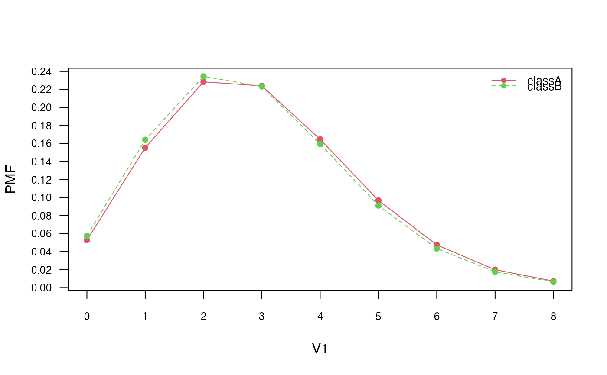

plot.poisson_naive_bayes.RdPlot method for objects of class "poisson_naive_bayes" designed for a quick look at the class conditional Poisson distributions of non-negative integer predictors.
# S3 method for poisson_naive_bayes plot(x, which = NULL, ask = FALSE, legend = TRUE, legend.box = FALSE, arg.num = list(), ...)
| x | object of class inheriting from |
|---|---|
| which | variables to be plotted (all by default). This can be any valid indexing vector or vector containing names of variables. |
| ask | logical; if |
| legend | logical; if |
| legend.box | logical; if |
| arg.num | other parameters to be passed as a named list to |
| ... | not used. |
Class conditional Poisson distributions are visualised by matplot.
cols <- 10 ; rows <- 100 M <- matrix(rpois(rows * cols, lambda = 3), nrow = rows, ncol = cols) # is.integer(M) # [1] TRUE y <- factor(sample(paste0("class", LETTERS[1:2]), rows, TRUE)) colnames(M) <- paste0("V", seq_len(ncol(M))) laplace <- 0 ### Train the Poisson Naive Bayes pnb <- poisson_naive_bayes(x = M, y = y, laplace = laplace) head(predict(pnb, newdata = M, type = "prob"))#> classA classB #> [1,] 0.3159148 0.6840852 #> [2,] 0.5214528 0.4785472 #> [3,] 0.3668842 0.6331158 #> [4,] 0.5247064 0.4752936 #> [5,] 0.3329755 0.6670245 #> [6,] 0.6363011 0.3636989# Visualize class conditional Poisson distributions corresponding # to the first feature plot(pnb, which = 1)